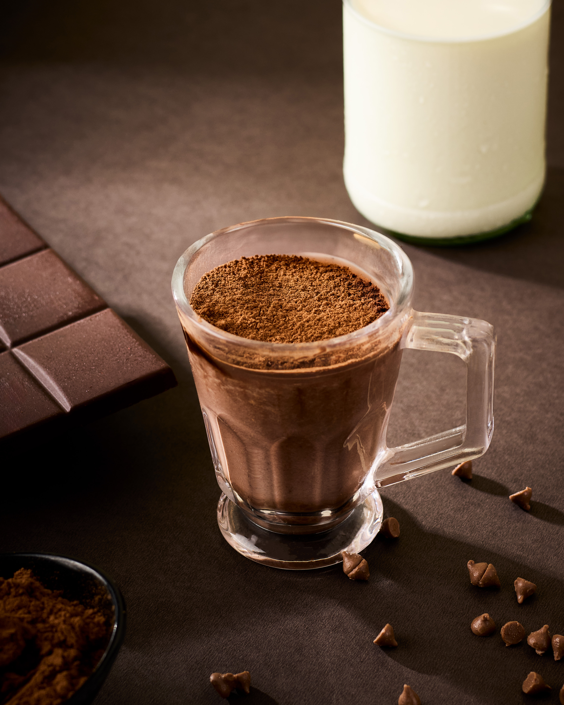

Static Brand Films — Chennai
We frame
brands like films.
A director-led studio making ad films, reels and campaign stills — scripted, lit and graded with a film set's discipline.



Scene 02 — What We Make
Brand Films
Ad films and brand stories — scripted and directed end to end.
Social Content
Reels and short-form, cut for pace and made to travel.
Photo Factory
Model portfolios, fashion editorials, family shoots and personal portraits — photography for people, not brands.
Scene 03 — The Studio
Marketing, shot through a director's lens.
Static Brand Films is built on one idea: brands that stand out feel directed, not just produced. Every ad film, reel and campaign starts the way a short film would — with a script, a shot list, and a reason for someone to watch until the last frame.
Founded by a director trained at the University of South Wales, the studio brings the same craft used on film sets — lighting, blocking, pacing — to the work brands put out every week.
Scene 04 — Under the Static Name
Static Photo Factory
Model portfolios, fashion editorials, family shoots and personal portraits — photography for people, not brands.
Scene 05 — Our Work
Our full portfolio
lives on Instagram.
Films, reels, campaigns and behind the scenes — everything we make is on our Instagram. Follow along to see the latest work.
Scene 06 — Let's Shoot
Got a brand
worth filming?
Tell us what you're building and where it needs to be seen. We'll come back with a treatment — not a template.